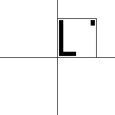

Finding IFS Rules from Images of Points
Background: Rotations and Reflections
Here we show reflection across the
x-axis
equals reflection across the
y-axis
followed by a 180 deg rotation.

Initial shape
Reflect across x
Initial shape
Reflect across y
Rotate 180 deg
Return to
Finding IFS Rules from Images of Points
.